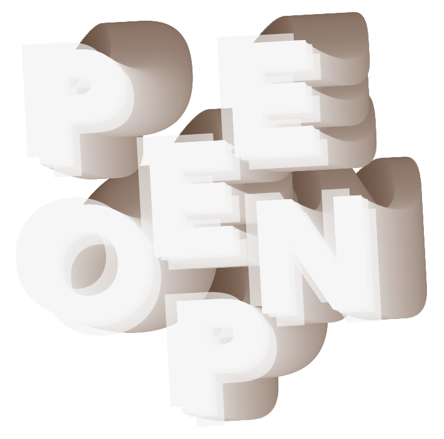

Het welhaast
slaapwekkende geschud
van de bus heeft
er voor gezorgd
dat ik, tegen de
tijd dat ik moet
uitstappen
(ter hoogte van
Centraal Station
Amsterdam)
ontzettend
nodig
moet

Ik ren achter de kinderwagen aan richting de Openbare Bibliotheek, waar ik toch moet zijn, omdat ik Stijloefeningen van Raymond Queneau wilde lezen. Er kwam steeds echter net iets tussen en dan met name onverwachte reisjes naar de wc. Het stationsplein is een mierenhoop met overal bouwputten. Drilboren resoneren in mijn oren en doen een beroep op mijn darmen waarin het nodige onverteerde afval zich een weg naar buiten doet. Gezellig is anders.
De verlossing is nabij. Maar vlak voordat ik de bibliotheek wil betreden, word ik aangeschoten door een vrouw met poepbruin haar. Ze praat Engels met een Frans accent. Ze vraagt of dit het postkantoor is. ‘Ja,’ zeg ik om er vanaf te zijn (want ik moet ontzettend nodig poepen en wil zo snel mogelijk naar binnen), ‘ja, dit is het postkantoor.’ Zonder mijn antwoord af te wachten, rent ze bij me vandaan richting een auto die zich achteruitrijdend van ons verwijdert. Ik ga snel door, op zoek naar een w.c.
Binnen sta ik voor de Q, maar het komt niet binnen. Ik kan me niet concentreren, zo ongelooflijk nodig moet ik poepen. De Q had net zo goed een P of een X of een A kunnen zijn. Ik sta te trappelen. Voor de zekerheid raadpleeg ik de online catalogus van de OBA. Ik tik ‘stijloefeningen’ in en ik zie staan dat Stijloefeningen wel degelijk aanwezig is. Op de tweede verdieping. Daar sta ik. Terwijl ik dus ontzettend nodig moet poepen. Nu zult u zeggen: ga dan naar een wc, maar ik kan niet zo goed tegen w.c.’s in openbare gebouwen. Je weet nooit wie er voor je heeft plaatsgenomen. Dus ik ga naar een medewerker die met me meekijkt. Ik kan me niet concentreren. Het enige wat ik kan denken is: ‘Ik wil poepen.’ Een medewerker is geen overbodige luxe. Maar ook de medewerker vindt niet waar ik naar op zoek ben. ‘Mail het magazijn,’ zegt hij me. Ik ben er niet echt bij met m’n hoofd. Kan niet eens een beetje zoeken. Maar ik mail, en een kwartier later krijg ik een mail terug: Stijloefeningen ligt op de daartoe bestemde plek. Op de tweede verdieping. Waar ik net de hele tijd heb gekeken. Het dringt niet echt tot me door. Het enige wat ik kan denken is: ik moet poepen, ik moet poepen.
Op het Bos en Lommerplein in een babywinkel koop ik een paar babyschoentjes. Geen flauw idee of de prijs-kwaliteitsverhouding een beetje in orde is. Ik kan me onmogelijk concentreren. Ik betaal met pin en ren naar huis toe.